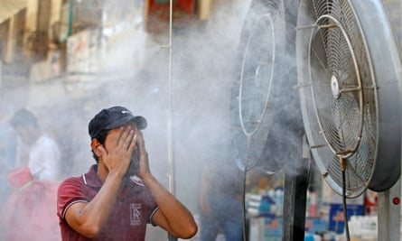

I n March, April and May this year, India and its neighbours endured repeated heatwaves that exposed more than a billion people to dangerously hot conditions. India broke several temperature records. The warmest March in more than a century was recorded across the country and a new high of more than 49C was hit in Delhi in May.
Record-breaking heat has also been recorded elsewhere this year, including the UK, which smashed its previous record by an incredible 1.6C, reaching more than 40C . Portugal reached 47C on the 21st of this month, the hottest July day on record, while several places in France recorded new highs.
These heatwaves have reignited the debate about how we can protect people from rising temperatures – and how high we can stand them to go. But the headline figures do not give the whole story when it comes to the impact of high temperatures on humans, because humidity, which is not factored into these figures, plays a huge role in how we actually experience heat.
Recent research has found that we may actually already be nearing the threshold values for human survivability of temperature and humidity for short periods in some places of the world – a measure known as the “wet-bulb” temperature – and that this threshold may actually be far lower than previously thought.
What does wet-bulb temperature mean?
Wet-bulb temperature (WBT) combines dry air temperature (as you’d see on a thermometer) with humidity – in essence, it is a measure of heat-stress conditions on humans.
The term comes from how it is measured. If you slide a wet cloth over the bulb of a thermometer, the evaporating water from the cloth will cool the thermometer down. This lower temperature is the WBT, which cannot go above the dry temperature. If humidity in the surrounding air is high, however – meaning the air is already more saturated with water – less evaporation will occur, so the WBT will be closer to the dry temperature.
The bed of the River Yamuna in Delhi in May.Photograph: Manish Swarup/AP
“The [wet-bulb] temperature reading you get will actually change depending on how humid it is,” says Kristina Dahl, a climate scientist at the Union of Concerned Scientists. “That’s the real purpose, to measure how well we’ll be able to cool ourselves by sweating.”
Humidity and temperature are not the only things that affect a person’s body temperature: solar radiation and wind speed are other factors. But WBT is especially important as a measure of indoor environments, where deaths often occur in heatwaves, says W Larry Kenney, a physiology professor at Penn State University.
When do wet-bulb temperatures get dangerous?
Concern often centres on the “threshold” or “critical” WBT for humans, the point at which a healthy person could survive for only six hours. This is usually considered to be 35C, approximately equivalent to an air temperature of 40C with a relative humidity of 75%. (At the UK’s 19 July peak temperature, relative humidity was approximately 25% and the wet-bulb temperature about 25C.)
Humans usually regulate their internal body temperature by sweating, but above the wet-bulb temperature, we can no longer cool down this way, leading our body temperature to rise steadily. This essentially marks a limit to human adaptability to extreme heat – if we cannot escape the conditions, our body’s core can rise beyond the survivable range and organs can start failing.
The oft-cited 35C value comes from a 2010 theoretical study. However, research co-authored by Kenney this year found that the real threshold our bodies can tolerate could be far lower. “Our data is actual human subject data and shows that the critical wet-bulb temperature is closer to 31.5C,” he says.
Bill McGuire, director of the Benfield UCL Hazard Research Centre in the UK, says if the new finding is true, we are in “a whole new ball game” when it comes to extreme heat. “The numbers of people exposed to potentially deadly combinations of heat and humidity across the world would be vastly higher than previously thought.”
It is important to note that heat gets dangerous for many people far below the threshold WBT.
Where could the wet-bulb threshold be passed?
In a global context, the UK is a relatively low-risk area for wet-bulb extremes – it has rarely reached above 28C so far . “My personal feeling is that a wet-bulb temperature of 35C would not be possible in the UK, although 31C may well be later in the century,” says McGuire . “ Then again, the Met Office certainly didn’t expect 40C [dry temperature] heat in 2022.”
The risk of passing the WBT threshold is larger elsewhere, however. One 2015 study concluded extremes are likely to approach and exceed 35C in the region around the Arabian Gulf towards the end of the century if greenhouse gas emissions are not reined in, posing questions for human habitability there.
In 2020, research found that some coastal subtropical locations have already experienced WBTs of 35C, albeit only for a few hours.
An Iraqi man cools down in Baghdad. Temperatures in the country reached 53C in 2020.Photograph: Ahmad Al-Rubaye/AFP/Getty Images
“Previous studies projected that this would happen several decades from now, but this shows it’s happening right now,” said lead author Colin Raymond, a climate scientist at Nasa’s Jet Propulsion Laboratory . “The times these events last will increase and the areas they affect will grow in direct correlation with global warming.”
The study also found that globally, the number of times that a WBT of 30C was reached – still considered an extreme humidity and heat event – more than doubled between 1979 and 2017. There were about 1,000 occurrences of a 31C WBT, and about a dozen above 35C, in Pakistan, India, Saudi Arabia, Mexico and Australia.
One important question is how temperature rises because of the climate crisis correlate with rises in WBT extremes. A study last year found that the maximum WBT in the tropics will rise by 1C for each 1C of average warming. This means limiting global heating to 1.5C above the pre-industrial era would prevent the majority of the tropical area – where 40% of the global population lives – from reaching the survival limit of 35C, the paper said.
Heatwaves are worsening many times faster than any other type of extreme weather because of the climate crisis. Scientists estimate that it made the India and Pakistan heatwave 30 times more likely . As another paper put it, asking whether today’s most impactful heatwaves could have occurred in a pre-industrial climate is “fast becoming an obsolete question”.
Instead, as heatwaves begin affecting more people’s lives more frequently, the question of what we can do about them is becoming ever more important. As the world sees the deadly mix of high humidity and high temperature more and more often, this could ultimately mean that some places simply become too hot to live in , opening up the need for migration pathways to enable millions of people to get away from their home areas.